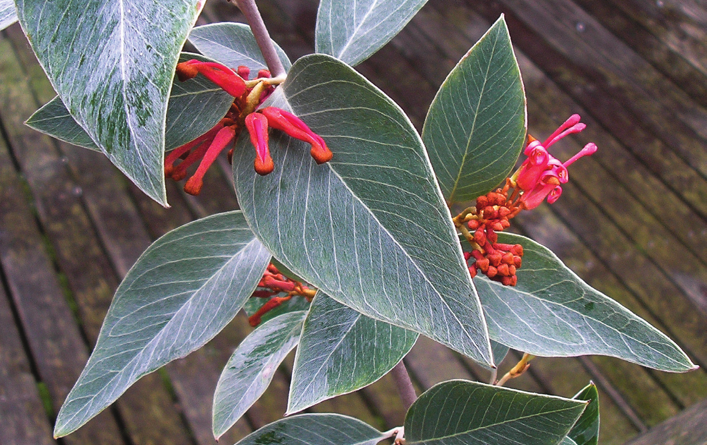

Muelleria 2015 34: 47-54
A new species Grevillea burrowa (Proteaceae) from the Burrowa-Pine Mountain National Park, North Eastern Victoria
Molyneux, W M, Forrester, S G
Abstract
Full text
Full text is available as a scanned copy of the original print version. Get a printable copy (PDF file) of the complete article, or click on a page image below to browse page by page. Links are also available for Selected References.
Images in this article
